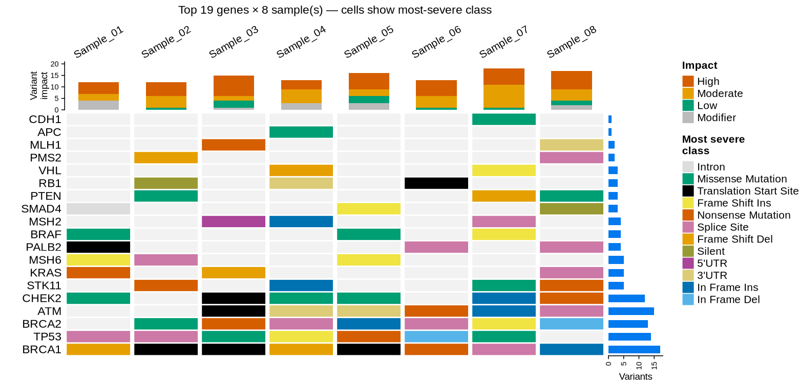
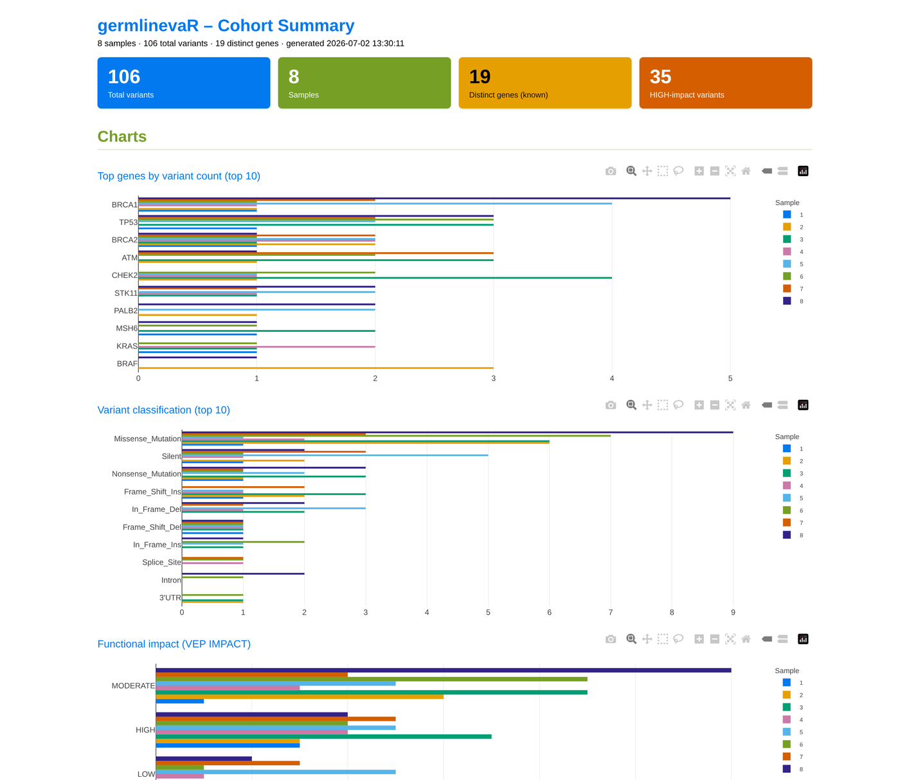
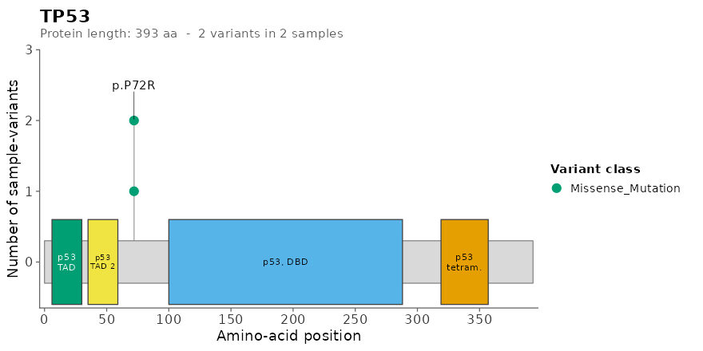
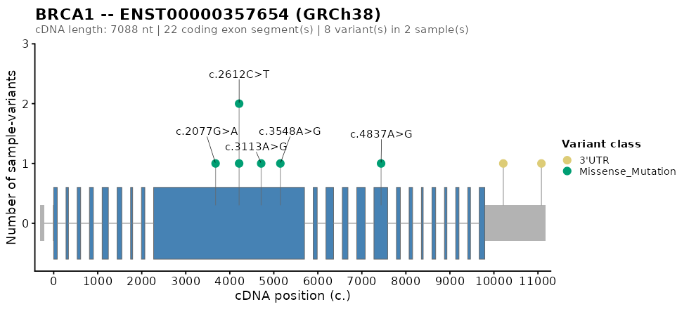

A self-contained toolchain for single-sample germline VCFs annotated with Ensembl VEP, SnpEff, or both — from on-disk VCF to filtered gvr table, candidate novel variants, cohort summary, a top-genes variant matrix, and per-gene protein-domain lollipops, all in one R session.
Hero example
library(germlinevaR)
vcf_dir <- system.file("extdata", package = "germlinevaR")
gvr <- read.gvr(vcf_dir) # 62 rows x 116 cols
filt <- gvr_filter(gvr) # 7 rows (default thresholds)
novel <- gvr_novel(gvr) # 3 candidates with no rsID / no AF
summ <- gvr_summary(filt, out_dir = tempdir()) # XLSX + PDF + HTML dashboard + 8 tables
gvr_plot(filt, top_n = 20, out_dir = tempdir()) # top-genes variant matrix (PNG)Installation
Install the development version from GitHub:
# install.packages("remotes")
remotes::install_github("FarmagenUFC/germlinevaR")germlinevaR will be submitted to Bioconductor once the accompanying manuscript is published. Once accepted, install the release version with:
if (!require("BiocManager", quietly = TRUE))
install.packages("BiocManager")
BiocManager::install("germlinevaR")System requirements: R (>= 4.4.0). Optional: bgzip from HTSlib is convenient for re-bgzipping VCFs but is not required to read them.
What it does
germlinevaR turns one or more per-sample VEP- or SnpEff-annotated VCFs into an MAF-like data.table (one row per ALT allele, one most-severe transcript per allele) using three sibling readers that share a canonical 80-field schema and are auto-routed from the VCF header. From there you get:
- a tunable, modular filter (
gvr_filter) over population AF, clinical significance, biotype, variant classification, genotype, and panel; - a dedicated subsetter (
gvr_novel) for candidate novel variants (no rsID and no allele frequency in any catalogue); - an 8-section cohort summary (
gvr_summary) that optionally writes an Excel workbook, a multi-page PDF, and a self-contained interactive HTML dashboard with plotly drill-downs and DT tables; - a ComplexHeatmap-based top-genes variant matrix (
gvr_plot) and per-section standalone PNG/SVG/PDF exports (gvr_sum_plots); - per-gene protein-domain lollipops (
gvr_lollipop) with on-the-fly cached InterPro domain fetching; - per-gene gene-structure (cDNA) lollipops (
gvr_genepos.plot) with Ensembl REST or local GTF sources.
Cohort folders are processed in parallel with a live heartbeat. Optional ABraOM SABE-609 allele-frequency annotation is added for Brazilian cohorts.
What it doesn’t do
germlinevaR does not call variants, annotate VCFs (use VEP or SnpEff beforehand), or replace tumor/normal somatic pipelines. It is built around the germline single-sample case.
Function map
| Group | Functions |
|---|---|
| Readers |
read.gvr (auto-routed) read.gvr.dual read.gvr.snpeff
|
| Filtering |
gvr_filter gvr_novel
|
| Panels |
gvr_panel_genes gvr_list_panels
|
| Summary |
gvr_summary gvr_sum_plots
|
| Per-gene plots |
gvr_plot (top-genes variant matrix) gvr_lollipop gvr_genepos.plot
|
| Palette / cache |
gvr_color_palette gvr_list_palettes gvr_domain_cache_clear
|
Top-genes variant matrix
gvr_plot() produces a ComplexHeatmap-based cohort overview: each row is a gene, each column a sample, and each cell is coloured by the most severe variant class observed. The top bar shows per-sample variant impact (HIGH / MODERATE / LOW / MODIFIER); the right bar shows per-gene total burden. The figure below uses illustrative multi-sample data:

HTML cohort dashboard
gvr_summary(gvr, save_html = TRUE, out_dir = ".") writes a self-contained interactive HTML dashboard with plotly drill-downs and DT tables. It opens with four KPI cards (total variants, samples, distinct genes, HIGH-impact count) followed by three bar charts (top mutated genes, variant classification, IMPACT) and a top-variants table. The screenshot below shows a dashboard rendered from a synthetic 8-sample cohort fabricated purely to demonstrate the layout; do not read biological meaning into any specific value.

gvr_sum_plots() writes the same panels that gvr_summary(save_html = TRUE) embeds in its interactive dashboard (top genes, variant classification, IMPACT, top variants) as standalone PNGs.
The script used to fabricate the demo cohort is bundled with the package at inst/scripts/build_synthetic_dashboard.R (also reachable via system.file("scripts", "build_synthetic_dashboard.R", package = "germlinevaR")).
Per-gene plots
Protein-domain lollipop (gvr_lollipop) and gene-structure lollipop (gvr_genepos.plot) for, e.g., TP53 and BRCA1:


gvr_summary() also writes the same panels as a multi-page PDF (gvr_summary(..., save_pdf = TRUE)) if you prefer a static report.
Documentation
Full vignette (HTML): germlinevaR walkthrough
-
After installing the package, open the vignette locally with:
vignette("germlinevaR", package = "germlinevaR")